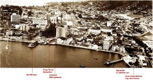

História do Martinelli
O Francisco Martinelli foi fundado em 31 de julho de 1915, por um grupo de jovens da alta sociedade florianopolitana. Seu nome é uma homenagem póstuma ao jovem Oficial da Marinha de Guerra, nascido em Nova Trento, que faleceu no litoral paulista em 1913, após o rebocador Guaraní, no qual viajava, chocar-se contra outra embarcação.
O primeiro presidente do Martinelli foi o Sr. Oswaldo Reis, pai do ex-governador Antônio Carlos Konder Reis. A diretoria era composta por Libório Soncini, João Barbosa, Edgard Simone, Pompílio Pereira Bento e Edmundo Luz.
-
1ª sede – Praia de Fora (atual Beira Mar Norte) [1917 até 1935]
No dia 29 de julho de 1917, foi inaugurado o primeiro galpão do clube, um imóvel localizado na Praia de Fora, atual Avenida Beira Mar Norte – imediações do trapiche.
A seguir temos uma imagem aérea da cidade de Florianópolis de 1929. No centro está a edificação do Colégio Catarinense. Observa-se as construções a beira mar onde, mais a direita (não aparece na foto) ficava a 1ª sede do Martinelli.

-
2ª sede – Rua Antônio Luz, fundos com Rua João Pinto [1935 até o início dos anos 1970]
Em 1935 o Martinelli mudou-se para o imóvel localizado no centro de Florianópolis – Rua Antônio Luz, fundos com Rua João Pinto. A foto abaixo mostra as construções da cidade antes do aterro da baía sul com a sede do Martinelli no lado esquerdo, próximo ao Forte Santa Bárbara.

Baía Sul – antes do aterro
Um patrimônio preservado carinhosamente por todos os diretores que se dedicaram e se dedicam ao Clube.
Abaixo pode-se ter uma idéia de como era o interior da 2ª sede do Martinelli.
Abaixo vê-se a antiga sede do Clube de Regatas Aldo Luz e o espaço à direita onde foi erguida a 2ª Sede do Martinelli, na Rua Antônio Luz.
Época áurea do Remo em Santa Catarina, as regatas chegavam a atrair um público de 6000 torcedores que se aglomeravam ao longo do cais Miramar, no trapiche da Rita Maria, para acompanhar os páreos.

Abaixo uma foto atual mostrando o prédio histórico do Martinelli.
-
3ª sede – Prédio do Estaleiro Arataca [início anos 1970 até 1979]
Com o início das obras do aterro da baía sul no início dos anos 70, mais uma mudança de sede foi imposta ao Martinelli. Ainda sem ter um destino definido, o Martinelli ficou instalado provisoriamente por quase 10 anos em um imóvel localizado abaixo da Ponte Hercílio Luz, na parte insular. Atualmente o espaço pertence ao Bar e Restaurante Scuna Sul.
-
4ª sede – Galpão no Parque Náutico Walter Lang [1979 até os dias de hoje]
Ainda durante as obras do aterro da baía sul, o Governo do Estado de Santa Catarina providenciou a construção de um local destinado a abrigar os três clubes de remo da Capital.
No dia 14 de junho de 1979 foi inaugurado o Parque Náutico Walter Lang e desde então é ali que os alicerces do Clube Náutico Francisco Martinelli se fincam sob a solidez da rocha da Ilha do Carvão (pequena ilha que foi aterrada com as obras na baía sul – ver imagem).
Florianópolis, 18 de novembro de 2012